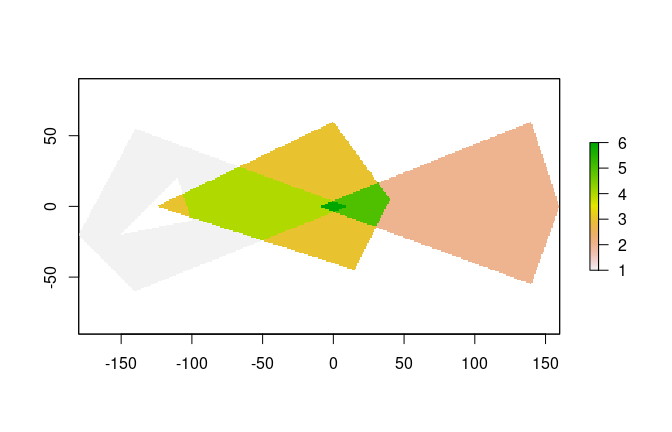
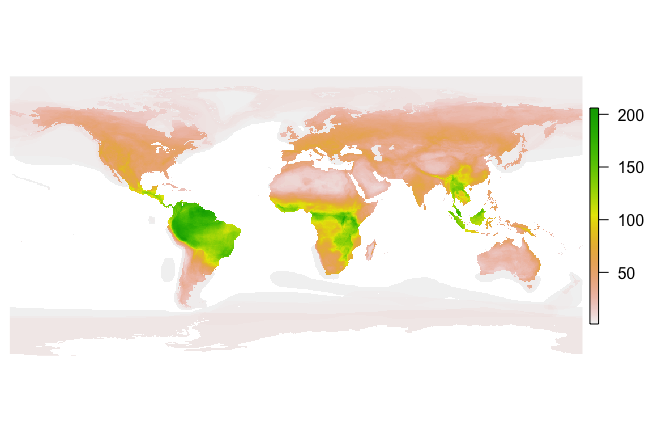

Fast sf-to-raster conversion
fasterize is a high-performance replacement for the rasterize() function in the raster package.
Functionality is currently limited to rasterizing polygons in sf-type data frames.
Installation
Install the current version of fasterize from CRAN:
install.packages('fasterize')Install the development version of fasterize with devtools:
devtools::install_github("ecohealthalliance/fasterize")fasterize uses Rcpp and thus requires a compile toolchain to install from source. Testing (and for normal use of sf objects) requires sf, which requires GDAL, GEOS, and PROJ to be installed.
Usage
The main function, fasterize(), takes the same inputs as raster::rasterize() but currently has fewer options and is is limited to rasterizing polygons.
A raster() and plot() methods for rasters are re-exported from the raster package.
library(raster)
library(fasterize)
library(sf)
p1 <- rbind(c(-180,-20), c(-140,55), c(10, 0), c(-140,-60), c(-180,-20))
hole <- rbind(c(-150,-20), c(-100,-10), c(-110,20), c(-150,-20))
p1 <- list(p1, hole)
p2 <- list(rbind(c(-10,0), c(140,60), c(160,0), c(140,-55), c(-10,0)))
p3 <- list(rbind(c(-125,0), c(0,60), c(40,5), c(15,-45), c(-125,0)))
pols <- st_sf(value = c(1,2,3),
geometry = st_sfc(lapply(list(p1, p2, p3), st_polygon)))
r <- raster(pols, res = 1)
r <- fasterize(pols, r, field = "value", fun="sum")
plot(r)
Performance
Let’s compare fasterize() to raster::rasterize():
pols_r <- as(pols, "Spatial")
bench <- microbenchmark::microbenchmark(
rasterize = r <- raster::rasterize(pols_r, r, field = "value", fun="sum"),
fasterize = f <- fasterize(pols, r, field = "value", fun="sum"),
unit = "ms"
)
print(bench, digits = 3)#> Unit: milliseconds
#> expr min lq mean median uq max neval cld
#> rasterize 1033.587 1110.270 1136.372 1128.716 1152.55 1523.47 100 b
#> fasterize 0.696 0.872 0.959 0.924 0.99 1.42 100 aIt’s also quite a bit faster than terra, see the vignette.
How does fasterize() do on a large set of polygons? Here I download the IUCN shapefile for the ranges of all terrestrial mammals and generate a 1/6 degree world map of mammalian biodiversity by rasterizing all the layers.
if(!dir.exists("Mammals_Terrestrial")) {
download.file(
"https://s3.amazonaws.com/hp3-shapefiles/Mammals_Terrestrial.zip",
destfile = "Mammals_Terrestrial.zip") # <-- 383 MB
unzip("Mammals_Terrestrial.zip", exdir = ".")
unlink("Mammals_Terrestrial.zip")
}
mammal_shapes <- st_read("Mammals_Terrestrial")
mammal_raster <- raster(mammal_shapes, res = 1/6)
bench2 <- microbenchmark::microbenchmark(
mammals = mammal_raster <- fasterize(mammal_shapes, mammal_raster, fun="sum"),
times=20, unit = "s")
print(bench2, digits=3)
par(mar=c(0,0.5,0,0.5))
plot(mammal_raster, axes=FALSE, box=FALSE)#> Unit: seconds
#> expr min lq mean median uq max neval
#> mammals 0.847 0.857 0.883 0.886 0.894 0.963 20
About
fasterize is developed openly at EcoHealth Alliance under the USAID PREDICT project. Please note that this project is released with a Contributor Code of Conduct. By participating in this project you agree to abide by its terms.